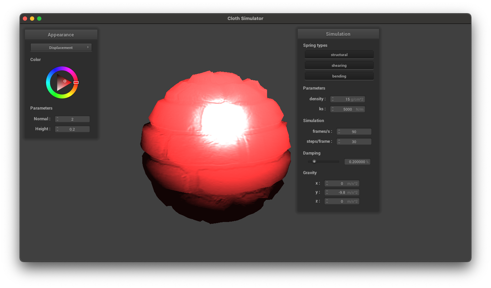

CS 184/284A: Computer Graphics and Imaging, Spring 2024
Homework 4: ClothSim
Alejandro Escontrela
Part I: Masses and Springs
Screenshot of Pinned2.json
No shearing
Only shearing
All constraints
Part II: Simulation via Numerical Integration
For very low ks values, the fabric becomes very stretchy and deformable, whereas for high ks values the fabric is stiff.
Low KS
High KS
For low density values, the fabric is very light and sits higher, whereas for high density values the fabric is heavy and sags.
Low density
High density
For high damping values, the fabric very slowly comes to rest, as the dampers in the spring mass damper system resists change and are very strong. For low damping values, the fabric oscillates for a long time before coming to rest.
Final resting position of the cloth
Part III: Handling Collisions with Other Objects
Increasing ks leads to a stiffer cloth that does not deform as much. This is especially noticeable for ks=50000, where the cloth is very stiff and does not deform much at all.
ks = 500
ks = 5000
ks = 50000
Final resting position of the cloth on the plane
Part IV: Handling Self-Collision
Initial self-collision, cloth folds in on itself.
After multiple self collisions, the cloth forms a windy pattern of stacks.
Cloth in its final resting place.
With low density, the cloth easily moves after the first self collision and forms one or two rolls
With high density, the cloth resists movement from self collisions and forms many stacks upon itself.
With a low KS, forces from the self collision do not propagate up the cloth and it remains undistorted until reaching a self-collision point.
With a high KS, the cloth becomes more stiff, and forces from the self collision propagate and distort the cloth.
Part V: Shaders
Overview
A shader program is a custom script that runs on the GPU, designed to control how graphics are rendered on the screen. It usually consists of at least two types: vertex shaders and fragment shaders. The vertex shader runs first and determines the position and various attributes of each vertex in a 3D model. It can manipulate the geometry, such as transforming the shape or animating vertices, and it passes processed data to the fragment shader.
The fragment shader takes over from there, calculating the final color of pixels on the screen. It uses the information from the vertex shader, such as the position, normal vectors, and texture coordinates, to apply lighting, shadows, and material effects. By working together, these shaders simulate how light interacts with surfaces, giving objects texture and depth, and creating visual effects like glossiness, transparency, or reflection, all contributing to the realism or artistic style of a scene.
Blinn-Phong
The Blinn-Phong shading model is a technique used in computer graphics to approximate how light reflects off surfaces. It breaks down light interaction into three main components: ambient, diffuse, and specular. The ambient component represents a constant color that is present regardless of lighting or viewpoint, mimicking the effect of indirect light in a scene. The diffuse component depends on the angle of the light hitting the surface, spreading equally in all directions, and giving the object more or less brightness depending on how directly it faces the light source. The specular component simulates the bright, mirror-like highlights that occur when light reflects directly into the viewer's eye, which is sharper for shiny surfaces and softer for dull surfaces.
Texture
Custom Texture
Bump and Displacement
Bump cloth
Bump sphere

Displacement
In bump shading, I simulate the appearance of texture and fine detail on a surface by manipulating the surface normals, without actually changing the geometry; the effect is purely visual and doesn't affect the silhouette of the object. Displacement shading, on the other hand, actually modifies the geometry of the surface based on a texture, moving vertices to create real bumps and dents that change the object's profile and can cast real shadows. While bump shading is less computationally intensive and great for small details, displacement shading provides more realism for significant surface variations but at a higher computational cost.